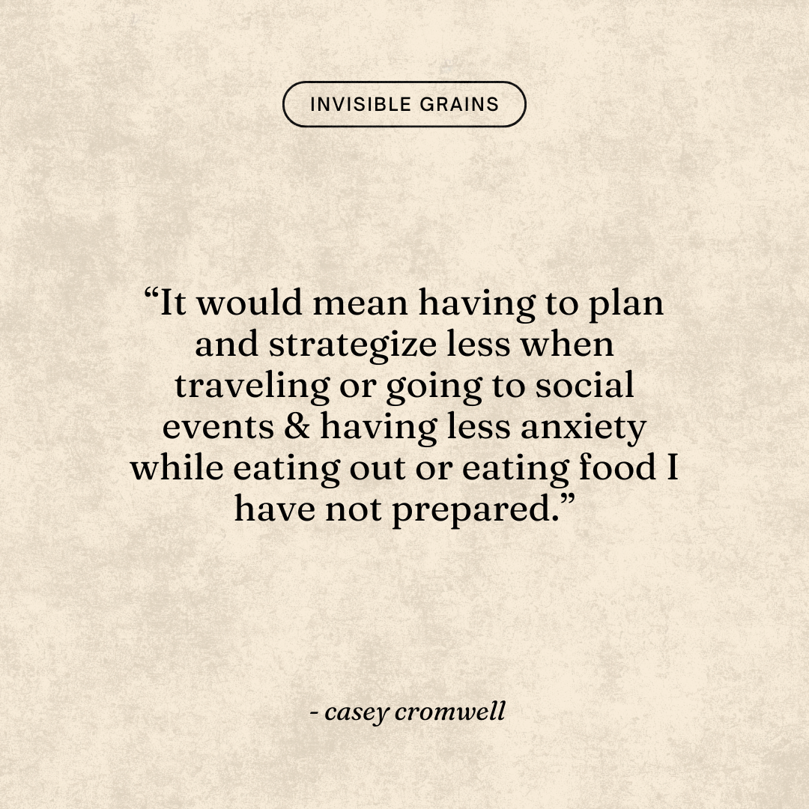
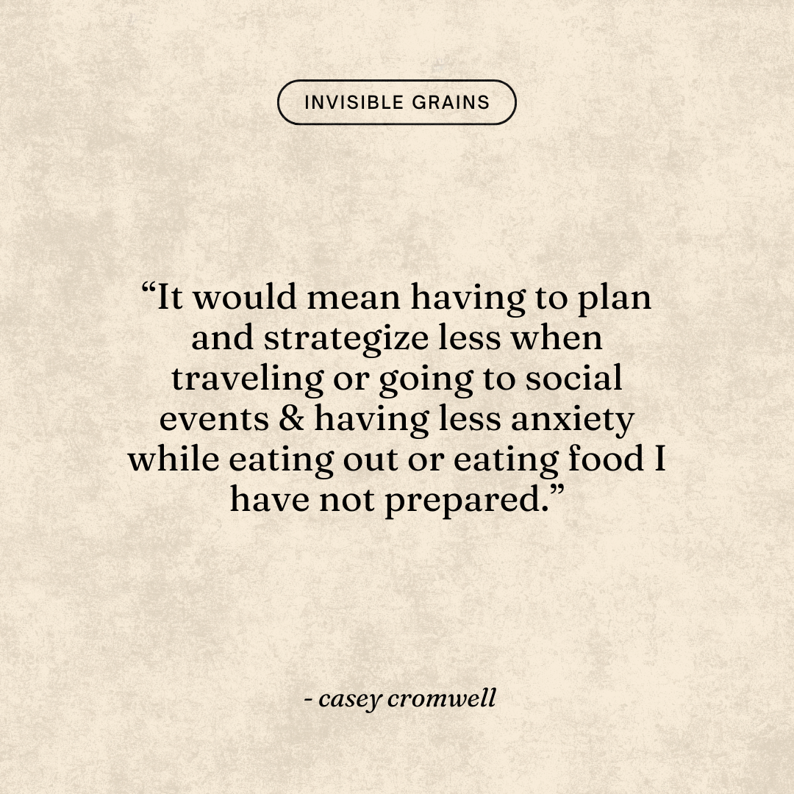

Celiac Disease is a serious autoimmune disease that can affect people of
all ages, ethnicities, and genders. Recently, studies have shown that
the prevalence of Celiac Disease is significantly increasing in the
global population. There are no cures to this disease, and the only
solution is to go on a 100% gluten-free diet. This can have both
detrimental social and emotional impacts on people. The list of symptoms
and related conditions alone would exceed this page; however, some
common side effects include anemia, skin rashes, infertility, reduced
bone-density, psychological disorders, and, of course, digestive issues.
With a disease that only affects about one percent of the population, I
am usually the first time someone has ever met a person with Celiac. One
percent is already an incremental amount of the population, yet about
83% of people with Celiac Disease remain undiagnosed or misdiagnosed.
This staggering amount is primarily a result of the lack of education
and communication surrounding the topic. Not only do people not know
what Celiac Disease is, but they also are not aware of what gluten is.
The goal of this book is to educate and inform people about the impacts
of Celiac Disease on daily life through personal stories in order to
bridge an educational gap to spread awareness.


 
